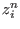
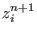
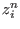
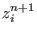
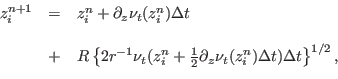

Next: General ODE solver (Source Up: Fortran: Module Interface time Previous: Print Contents
INTERFACE:
subroutine lagrange(nlev,dt,zlev,nuh,w,npar,active,zi,zp)DESCRIPTION:
Here a Lagrangian particle random walk for spatially
inhomogeneous turbulence according to Visser (1997) is implemented.
With the random walk, the particle  is moved from the vertical
position  to  according to the following algorithm:
is moved from the vertical
position  to  according to the following algorithm:
|  | (246) |
USES:
IMPLICIT NONEINPUT PARAMETERS:
integer, intent(in) :: nlev
REALTYPE, intent(in) :: dt
REALTYPE, intent(in) :: zlev(0:nlev)
REALTYPE, intent(in) :: nuh(0:nlev)
REALTYPE, intent(in) :: w
integer, intent(in) :: npar
logical, intent(in) :: active(npar)
INPUT/OUTPUT PARAMETERS:
integer, intent(inout) :: zi(npar)
REALTYPE, intent(inout) :: zp(npar)
REVISION HISTORY:
Original author(s): Hans Burchard & Karsten Bolding
$Log: lagrange.F90,v $
Revision 1.9 2010-09-17 12:53:53 jorn
extensive code clean-up to ensure proper initialization and clean-up of all variables
Revision 1.8 2009-01-07 07:25:37 kb
fixed various compilation warnings found by gfortran
Revision 1.7 2008-11-03 12:56:39 jorn
fixed: particles are now reflected multiple times if needed
Revision 1.6 2008-07-07 09:05:51 lars
added LaTeX label
Revision 1.5 2005-12-02 21:06:09 hb
Lagrangian routine included into source code documentation
Revision 1.4 2004/08/19 09:24:57 hb
Variance of random walk and background diffusivity explicitely prescribed --> Hidekatsu Yamazaki
Revision 1.3 2004/08/18 16:09:39 hb
Visser correction for viscosity evaluation included
Revision 1.2 2004/03/22 10:14:24 kbk
cleaned, store old index -> much faster, fixed conc. calc.
Revision 1.1 2004/03/04 09:28:41 kbk
general lagrangian 1D solver
LOCAL VARIABLES:
integer :: i,n
REALTYPE :: rnd(npar),rnd_var_inv
REALTYPE,parameter :: visc_back=0.e-6,rnd_var=0.333333333
REALTYPE :: depth,dz(nlev),dzn(nlev),step,zp_old
REALTYPE :: visc,rat,dt_inv,zloc
logical,parameter :: visc_corr=.false.